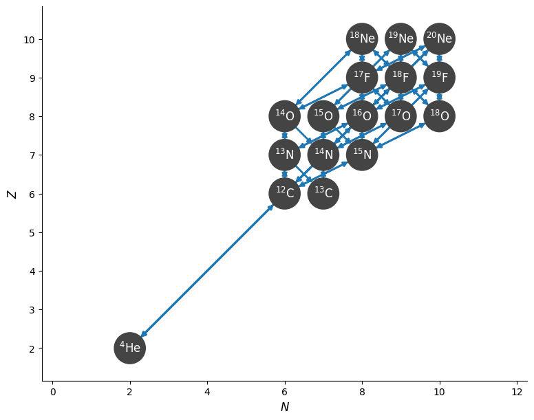
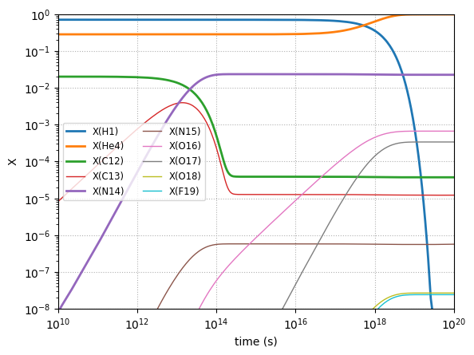

Application: Reaction Networks#
Reaction Rates#
Nuclear experiments provide us with reaction rates of the form (for a 2-body reaction):
where \(n_A\) is the number density of species A and \(n_B\) is the number density of species B. The denominator ensures that we don’t double count for a species reacting with itself. The term \(\langle \sigma v \rangle\) is the average of the cross section and velocity over the distribution of velocities in the frame of the reaction. This is what is measured by experiments.
Here the rate, \(r\), has units of reactions / time / volume.
Reaction databases (like ReacLib) often provide fits to \(N_A \langle \sigma v \rangle\), where \(N_A\) is Avogadro’s number.
Structure of a Network#
A reaction network is a set of nuclei and the rates that link them together. Consider 4 nuclei, \(A\), \(B\), \(C\), and \(D\), linked by 2 rates:
we would describe these as a set of ODEs for each species. In terms of number density, it is straightforward to write down:
Here the first equation says that we lose 2 nuclei \(A\) for each \(A + A\) reaction and we gain 1 nuclei \(A\) for each \(B + C\) reaction. The factor of 1/2 in the first term is because when \(A\) reacts with itself, we don’t want to double count the number of pairs.
We can instead write this in terms of molar or mass fractions. Mass fractions are defined as the mass of the species relative to the total mass of all species in a volume, or
These have the property
Molar fractions are scaled by the atomic weight:
where \(Y_k\) is the molar fraction of species \(k\), \(X_k\) is the mass fraction, and \(A_k\) is the atomic weight. Number density is related to mass fraction as:
where \(m_u\) is the atomic mass unit (\(1/N_A\)).
Substituting these into the above expression we get
This is often the form we write the system of ODEs in when we write a network.
Integrating the Network#
We often need to integrate this system together with an energy equation to capture the evolution of the temperature as reactions progress, since the reaction rates are highly-temperature sensitive.
But even without an energy equation, this system is difficult to integrate because there can be a wide range of timescales involved in the reaction rates, which makes the system a stiff system of ODEs. We need to use different methods from the explicit Runge-Kutta methods we often use.
CNO Burning#
We can use pynucastro to generate the righthand side function for an astrophysical reaction network.
We’ll create a CNO network that has the rates for all 4 CNO cycles + hot-CNO, as listed here: https://reaclib.jinaweb.org/popularRates.php
import numpy as np
import matplotlib.pyplot as plt
import pynucastro as pyna
net = pyna.network_helper(["p", "he4",
"c12", "c13",
"n13", "n14", "n15",
"o14", "o15", "o16", "o17", "o18",
"f17", "f18", "f19",
"ne18", "ne19", "ne20"], tabular_ordering=["ffn", "oda"])
net.summary()
Network summary
---------------
explicitly carried nuclei: 18
approximated-out nuclei: 0
inert nuclei (included in carried): 0
NSE compatible? False
total number of rates: 65
rates explicitly connecting nuclei: 65
hidden rates: 0
reaclib rates: 30
starlib rates: 0
temperature tabular rates: 0
weak tabular rates: 8
approximate rates: 0
derived rates: 27
modified rates: 0
custom rates: 0
We can visualize the network and rates linking the nuclei
fig = net.plot()

pynucastro can write out the python code needed to evaluate the reaction rates
net.write_network("cno_integration_example.py")
/opt/hostedtoolcache/Python/3.14.5/x64/lib/python3.14/site-packages/pynucastro/rates/derived_rate.py:125: UserWarning: C12 partition function is not supported by tables: set log_pf = 0.0 by default
warnings.warn(UserWarning(f'{nuc} partition function is not supported by tables: set log_pf = 0.0 by default'))
/opt/hostedtoolcache/Python/3.14.5/x64/lib/python3.14/site-packages/pynucastro/rates/derived_rate.py:125: UserWarning: N13 partition function is not supported by tables: set log_pf = 0.0 by default
warnings.warn(UserWarning(f'{nuc} partition function is not supported by tables: set log_pf = 0.0 by default'))
/opt/hostedtoolcache/Python/3.14.5/x64/lib/python3.14/site-packages/pynucastro/rates/derived_rate.py:125: UserWarning: C13 partition function is not supported by tables: set log_pf = 0.0 by default
warnings.warn(UserWarning(f'{nuc} partition function is not supported by tables: set log_pf = 0.0 by default'))
/opt/hostedtoolcache/Python/3.14.5/x64/lib/python3.14/site-packages/pynucastro/rates/derived_rate.py:125: UserWarning: N14 partition function is not supported by tables: set log_pf = 0.0 by default
warnings.warn(UserWarning(f'{nuc} partition function is not supported by tables: set log_pf = 0.0 by default'))
/opt/hostedtoolcache/Python/3.14.5/x64/lib/python3.14/site-packages/pynucastro/rates/derived_rate.py:125: UserWarning: N15 partition function is not supported by tables: set log_pf = 0.0 by default
warnings.warn(UserWarning(f'{nuc} partition function is not supported by tables: set log_pf = 0.0 by default'))
Now we can import the network that was just created
import cno_integration_example as cno
import inspect
print(inspect.getsource(cno.rhs_eq))
@numba.njit()
def rhs_eq(t, Y, rho, T, screen_func):
rate_eval = do_rate_eval(t, Y, rho, T, screen_func)
dYdt = np.zeros((nnuc), dtype=np.float64)
dYdt[jp] = (
( -rho*Y[jp]*Y[jc12]*rate_eval.p_C12_to_N13_reaclib +Y[jn13]*rate_eval.N13_to_p_C12_derived ) +
( -rho*Y[jp]*Y[jc13]*rate_eval.p_C13_to_N14_reaclib +Y[jn14]*rate_eval.N14_to_p_C13_derived ) +
( -rho*Y[jp]*Y[jn13]*rate_eval.p_N13_to_O14_reaclib +Y[jo14]*rate_eval.O14_to_p_N13_derived ) +
( -rho*Y[jp]*Y[jn14]*rate_eval.p_N14_to_O15_reaclib +Y[jo15]*rate_eval.O15_to_p_N14_derived ) +
( -rho*Y[jp]*Y[jn15]*rate_eval.p_N15_to_O16_reaclib +Y[jo16]*rate_eval.O16_to_p_N15_derived ) +
( -rho*Y[jp]*Y[jo16]*rate_eval.p_O16_to_F17_reaclib +Y[jf17]*rate_eval.F17_to_p_O16_derived ) +
( -rho*Y[jp]*Y[jo17]*rate_eval.p_O17_to_F18_reaclib +Y[jf18]*rate_eval.F18_to_p_O17_derived ) +
( -rho*Y[jp]*Y[jo18]*rate_eval.p_O18_to_F19_reaclib +Y[jf19]*rate_eval.F19_to_p_O18_derived ) +
( -rho*Y[jp]*Y[jf17]*rate_eval.p_F17_to_Ne18_reaclib +Y[jne18]*rate_eval.Ne18_to_p_F17_derived ) +
( -rho*Y[jp]*Y[jf18]*rate_eval.p_F18_to_Ne19_reaclib +Y[jne19]*rate_eval.Ne19_to_p_F18_derived ) +
( -rho*Y[jp]*Y[jf19]*rate_eval.p_F19_to_Ne20_reaclib +Y[jne20]*rate_eval.Ne20_to_p_F19_derived ) +
( +rho*Y[jhe4]*Y[jn13]*rate_eval.He4_N13_to_p_O16_reaclib -rho*Y[jp]*Y[jo16]*rate_eval.p_O16_to_He4_N13_derived ) +
( -rho*Y[jp]*Y[jn15]*rate_eval.p_N15_to_He4_C12_reaclib +rho*Y[jhe4]*Y[jc12]*rate_eval.He4_C12_to_p_N15_derived ) +
( +rho*Y[jhe4]*Y[jo14]*rate_eval.He4_O14_to_p_F17_reaclib -rho*Y[jp]*Y[jf17]*rate_eval.p_F17_to_He4_O14_derived ) +
( -rho*Y[jp]*Y[jo17]*rate_eval.p_O17_to_He4_N14_reaclib +rho*Y[jhe4]*Y[jn14]*rate_eval.He4_N14_to_p_O17_derived ) +
( -rho*Y[jp]*Y[jo18]*rate_eval.p_O18_to_He4_N15_reaclib +rho*Y[jhe4]*Y[jn15]*rate_eval.He4_N15_to_p_O18_derived ) +
( -rho*Y[jp]*Y[jf18]*rate_eval.p_F18_to_He4_O15_reaclib +rho*Y[jhe4]*Y[jo15]*rate_eval.He4_O15_to_p_F18_derived ) +
( -rho*Y[jp]*Y[jf19]*rate_eval.p_F19_to_He4_O16_reaclib +rho*Y[jhe4]*Y[jo16]*rate_eval.He4_O16_to_p_F19_derived ) +
( +rho*Y[jhe4]*Y[jf17]*rate_eval.He4_F17_to_p_Ne20_derived -rho*Y[jp]*Y[jne20]*rate_eval.p_Ne20_to_He4_F17_reaclib )
)
dYdt[jhe4] = (
( -rho*Y[jhe4]*Y[jc12]*rate_eval.He4_C12_to_O16_reaclib +Y[jo16]*rate_eval.O16_to_He4_C12_derived ) +
( -rho*Y[jhe4]*Y[jn14]*rate_eval.He4_N14_to_F18_reaclib +Y[jf18]*rate_eval.F18_to_He4_N14_derived ) +
( -rho*Y[jhe4]*Y[jn15]*rate_eval.He4_N15_to_F19_reaclib +Y[jf19]*rate_eval.F19_to_He4_N15_derived ) +
( -rho*Y[jhe4]*Y[jo14]*rate_eval.He4_O14_to_Ne18_reaclib +Y[jne18]*rate_eval.Ne18_to_He4_O14_derived ) +
( -rho*Y[jhe4]*Y[jo15]*rate_eval.He4_O15_to_Ne19_reaclib +Y[jne19]*rate_eval.Ne19_to_He4_O15_derived ) +
( -rho*Y[jhe4]*Y[jo16]*rate_eval.He4_O16_to_Ne20_reaclib +Y[jne20]*rate_eval.Ne20_to_He4_O16_derived ) +
( +5.00000000000000e-01*rho*Y[jc12]**2*rate_eval.C12_C12_to_He4_Ne20_reaclib -rho*Y[jhe4]*Y[jne20]*rate_eval.He4_Ne20_to_C12_C12_derived ) +
( -rho*Y[jhe4]*Y[jn13]*rate_eval.He4_N13_to_p_O16_reaclib +rho*Y[jp]*Y[jo16]*rate_eval.p_O16_to_He4_N13_derived ) +
( +rho*Y[jp]*Y[jn15]*rate_eval.p_N15_to_He4_C12_reaclib -rho*Y[jhe4]*Y[jc12]*rate_eval.He4_C12_to_p_N15_derived ) +
( -rho*Y[jhe4]*Y[jo14]*rate_eval.He4_O14_to_p_F17_reaclib +rho*Y[jp]*Y[jf17]*rate_eval.p_F17_to_He4_O14_derived ) +
( +rho*Y[jp]*Y[jo17]*rate_eval.p_O17_to_He4_N14_reaclib -rho*Y[jhe4]*Y[jn14]*rate_eval.He4_N14_to_p_O17_derived ) +
( +rho*Y[jp]*Y[jo18]*rate_eval.p_O18_to_He4_N15_reaclib -rho*Y[jhe4]*Y[jn15]*rate_eval.He4_N15_to_p_O18_derived ) +
( +rho*Y[jp]*Y[jf18]*rate_eval.p_F18_to_He4_O15_reaclib -rho*Y[jhe4]*Y[jo15]*rate_eval.He4_O15_to_p_F18_derived ) +
( +rho*Y[jp]*Y[jf19]*rate_eval.p_F19_to_He4_O16_reaclib -rho*Y[jhe4]*Y[jo16]*rate_eval.He4_O16_to_p_F19_derived ) +
( + -3*1.66666666666667e-01*rho**2*Y[jhe4]**3*rate_eval.He4_He4_He4_to_C12_reaclib + 3*Y[jc12]*rate_eval.C12_to_He4_He4_He4_derived ) +
( -rho*Y[jhe4]*Y[jf17]*rate_eval.He4_F17_to_p_Ne20_derived +rho*Y[jp]*Y[jne20]*rate_eval.p_Ne20_to_He4_F17_reaclib )
)
dYdt[jc12] = (
( -rho*Y[jp]*Y[jc12]*rate_eval.p_C12_to_N13_reaclib +Y[jn13]*rate_eval.N13_to_p_C12_derived ) +
( -rho*Y[jhe4]*Y[jc12]*rate_eval.He4_C12_to_O16_reaclib +Y[jo16]*rate_eval.O16_to_He4_C12_derived ) +
( + -2*5.00000000000000e-01*rho*Y[jc12]**2*rate_eval.C12_C12_to_He4_Ne20_reaclib + 2*rho*Y[jhe4]*Y[jne20]*rate_eval.He4_Ne20_to_C12_C12_derived ) +
( +rho*Y[jp]*Y[jn15]*rate_eval.p_N15_to_He4_C12_reaclib -rho*Y[jhe4]*Y[jc12]*rate_eval.He4_C12_to_p_N15_derived ) +
( +1.66666666666667e-01*rho**2*Y[jhe4]**3*rate_eval.He4_He4_He4_to_C12_reaclib -Y[jc12]*rate_eval.C12_to_He4_He4_He4_derived )
)
dYdt[jc13] = (
+Y[jn13]*rate_eval.N13_to_C13_reaclib +
( -rho*Y[jp]*Y[jc13]*rate_eval.p_C13_to_N14_reaclib +Y[jn14]*rate_eval.N14_to_p_C13_derived )
)
dYdt[jn13] = (
-Y[jn13]*rate_eval.N13_to_C13_reaclib +
( +rho*Y[jp]*Y[jc12]*rate_eval.p_C12_to_N13_reaclib -Y[jn13]*rate_eval.N13_to_p_C12_derived ) +
( -rho*Y[jp]*Y[jn13]*rate_eval.p_N13_to_O14_reaclib +Y[jo14]*rate_eval.O14_to_p_N13_derived ) +
( -rho*Y[jhe4]*Y[jn13]*rate_eval.He4_N13_to_p_O16_reaclib +rho*Y[jp]*Y[jo16]*rate_eval.p_O16_to_He4_N13_derived )
)
dYdt[jn14] = (
+Y[jo14]*rate_eval.O14_to_N14_reaclib +
( +rho*Y[jp]*Y[jc13]*rate_eval.p_C13_to_N14_reaclib -Y[jn14]*rate_eval.N14_to_p_C13_derived ) +
( -rho*Y[jp]*Y[jn14]*rate_eval.p_N14_to_O15_reaclib +Y[jo15]*rate_eval.O15_to_p_N14_derived ) +
( -rho*Y[jhe4]*Y[jn14]*rate_eval.He4_N14_to_F18_reaclib +Y[jf18]*rate_eval.F18_to_He4_N14_derived ) +
( +rho*Y[jp]*Y[jo17]*rate_eval.p_O17_to_He4_N14_reaclib -rho*Y[jhe4]*Y[jn14]*rate_eval.He4_N14_to_p_O17_derived )
)
dYdt[jn15] = (
+Y[jo15]*rate_eval.O15_to_N15_reaclib +
( -rho*Y[jp]*Y[jn15]*rate_eval.p_N15_to_O16_reaclib +Y[jo16]*rate_eval.O16_to_p_N15_derived ) +
( -rho*Y[jhe4]*Y[jn15]*rate_eval.He4_N15_to_F19_reaclib +Y[jf19]*rate_eval.F19_to_He4_N15_derived ) +
( -rho*Y[jp]*Y[jn15]*rate_eval.p_N15_to_He4_C12_reaclib +rho*Y[jhe4]*Y[jc12]*rate_eval.He4_C12_to_p_N15_derived ) +
( +rho*Y[jp]*Y[jo18]*rate_eval.p_O18_to_He4_N15_reaclib -rho*Y[jhe4]*Y[jn15]*rate_eval.He4_N15_to_p_O18_derived )
)
dYdt[jo14] = (
-Y[jo14]*rate_eval.O14_to_N14_reaclib +
( +rho*Y[jp]*Y[jn13]*rate_eval.p_N13_to_O14_reaclib -Y[jo14]*rate_eval.O14_to_p_N13_derived ) +
( -rho*Y[jhe4]*Y[jo14]*rate_eval.He4_O14_to_Ne18_reaclib +Y[jne18]*rate_eval.Ne18_to_He4_O14_derived ) +
( -rho*Y[jhe4]*Y[jo14]*rate_eval.He4_O14_to_p_F17_reaclib +rho*Y[jp]*Y[jf17]*rate_eval.p_F17_to_He4_O14_derived )
)
dYdt[jo15] = (
-Y[jo15]*rate_eval.O15_to_N15_reaclib +
( +rho*Y[jp]*Y[jn14]*rate_eval.p_N14_to_O15_reaclib -Y[jo15]*rate_eval.O15_to_p_N14_derived ) +
( -rho*Y[jhe4]*Y[jo15]*rate_eval.He4_O15_to_Ne19_reaclib +Y[jne19]*rate_eval.Ne19_to_He4_O15_derived ) +
( +rho*Y[jp]*Y[jf18]*rate_eval.p_F18_to_He4_O15_reaclib -rho*Y[jhe4]*Y[jo15]*rate_eval.He4_O15_to_p_F18_derived )
)
dYdt[jo16] = (
( +rho*Y[jhe4]*Y[jc12]*rate_eval.He4_C12_to_O16_reaclib -Y[jo16]*rate_eval.O16_to_He4_C12_derived ) +
( +rho*Y[jp]*Y[jn15]*rate_eval.p_N15_to_O16_reaclib -Y[jo16]*rate_eval.O16_to_p_N15_derived ) +
( -rho*Y[jp]*Y[jo16]*rate_eval.p_O16_to_F17_reaclib +Y[jf17]*rate_eval.F17_to_p_O16_derived ) +
( -rho*Y[jhe4]*Y[jo16]*rate_eval.He4_O16_to_Ne20_reaclib +Y[jne20]*rate_eval.Ne20_to_He4_O16_derived ) +
( +rho*Y[jhe4]*Y[jn13]*rate_eval.He4_N13_to_p_O16_reaclib -rho*Y[jp]*Y[jo16]*rate_eval.p_O16_to_He4_N13_derived ) +
( +rho*Y[jp]*Y[jf19]*rate_eval.p_F19_to_He4_O16_reaclib -rho*Y[jhe4]*Y[jo16]*rate_eval.He4_O16_to_p_F19_derived )
)
dYdt[jo17] = (
( -rho*Y[jp]*Y[jo17]*rate_eval.p_O17_to_F18_reaclib +Y[jf18]*rate_eval.F18_to_p_O17_derived ) +
( -rho*Y[jp]*Y[jo17]*rate_eval.p_O17_to_He4_N14_reaclib +rho*Y[jhe4]*Y[jn14]*rate_eval.He4_N14_to_p_O17_derived ) +
( +Y[jf17]*rate_eval.F17_to_O17_weaktab -Y[jo17]*rate_eval.O17_to_F17_weaktab )
)
dYdt[jo18] = (
( -rho*Y[jp]*Y[jo18]*rate_eval.p_O18_to_F19_reaclib +Y[jf19]*rate_eval.F19_to_p_O18_derived ) +
( -rho*Y[jp]*Y[jo18]*rate_eval.p_O18_to_He4_N15_reaclib +rho*Y[jhe4]*Y[jn15]*rate_eval.He4_N15_to_p_O18_derived ) +
( +Y[jf18]*rate_eval.F18_to_O18_weaktab -Y[jo18]*rate_eval.O18_to_F18_weaktab )
)
dYdt[jf17] = (
( +rho*Y[jp]*Y[jo16]*rate_eval.p_O16_to_F17_reaclib -Y[jf17]*rate_eval.F17_to_p_O16_derived ) +
( -rho*Y[jp]*Y[jf17]*rate_eval.p_F17_to_Ne18_reaclib +Y[jne18]*rate_eval.Ne18_to_p_F17_derived ) +
( +rho*Y[jhe4]*Y[jo14]*rate_eval.He4_O14_to_p_F17_reaclib -rho*Y[jp]*Y[jf17]*rate_eval.p_F17_to_He4_O14_derived ) +
( -Y[jf17]*rate_eval.F17_to_O17_weaktab +Y[jo17]*rate_eval.O17_to_F17_weaktab ) +
( -rho*Y[jhe4]*Y[jf17]*rate_eval.He4_F17_to_p_Ne20_derived +rho*Y[jp]*Y[jne20]*rate_eval.p_Ne20_to_He4_F17_reaclib )
)
dYdt[jf18] = (
( +rho*Y[jhe4]*Y[jn14]*rate_eval.He4_N14_to_F18_reaclib -Y[jf18]*rate_eval.F18_to_He4_N14_derived ) +
( +rho*Y[jp]*Y[jo17]*rate_eval.p_O17_to_F18_reaclib -Y[jf18]*rate_eval.F18_to_p_O17_derived ) +
( -rho*Y[jp]*Y[jf18]*rate_eval.p_F18_to_Ne19_reaclib +Y[jne19]*rate_eval.Ne19_to_p_F18_derived ) +
( -rho*Y[jp]*Y[jf18]*rate_eval.p_F18_to_He4_O15_reaclib +rho*Y[jhe4]*Y[jo15]*rate_eval.He4_O15_to_p_F18_derived ) +
( -Y[jf18]*rate_eval.F18_to_O18_weaktab +Y[jo18]*rate_eval.O18_to_F18_weaktab ) +
( +Y[jne18]*rate_eval.Ne18_to_F18_weaktab -Y[jf18]*rate_eval.F18_to_Ne18_weaktab )
)
dYdt[jf19] = (
( +rho*Y[jhe4]*Y[jn15]*rate_eval.He4_N15_to_F19_reaclib -Y[jf19]*rate_eval.F19_to_He4_N15_derived ) +
( +rho*Y[jp]*Y[jo18]*rate_eval.p_O18_to_F19_reaclib -Y[jf19]*rate_eval.F19_to_p_O18_derived ) +
( -rho*Y[jp]*Y[jf19]*rate_eval.p_F19_to_Ne20_reaclib +Y[jne20]*rate_eval.Ne20_to_p_F19_derived ) +
( -rho*Y[jp]*Y[jf19]*rate_eval.p_F19_to_He4_O16_reaclib +rho*Y[jhe4]*Y[jo16]*rate_eval.He4_O16_to_p_F19_derived ) +
( +Y[jne19]*rate_eval.Ne19_to_F19_weaktab -Y[jf19]*rate_eval.F19_to_Ne19_weaktab )
)
dYdt[jne18] = (
( +rho*Y[jhe4]*Y[jo14]*rate_eval.He4_O14_to_Ne18_reaclib -Y[jne18]*rate_eval.Ne18_to_He4_O14_derived ) +
( +rho*Y[jp]*Y[jf17]*rate_eval.p_F17_to_Ne18_reaclib -Y[jne18]*rate_eval.Ne18_to_p_F17_derived ) +
( -Y[jne18]*rate_eval.Ne18_to_F18_weaktab +Y[jf18]*rate_eval.F18_to_Ne18_weaktab )
)
dYdt[jne19] = (
( +rho*Y[jhe4]*Y[jo15]*rate_eval.He4_O15_to_Ne19_reaclib -Y[jne19]*rate_eval.Ne19_to_He4_O15_derived ) +
( +rho*Y[jp]*Y[jf18]*rate_eval.p_F18_to_Ne19_reaclib -Y[jne19]*rate_eval.Ne19_to_p_F18_derived ) +
( -Y[jne19]*rate_eval.Ne19_to_F19_weaktab +Y[jf19]*rate_eval.F19_to_Ne19_weaktab )
)
dYdt[jne20] = (
( +rho*Y[jhe4]*Y[jo16]*rate_eval.He4_O16_to_Ne20_reaclib -Y[jne20]*rate_eval.Ne20_to_He4_O16_derived ) +
( +rho*Y[jp]*Y[jf19]*rate_eval.p_F19_to_Ne20_reaclib -Y[jne20]*rate_eval.Ne20_to_p_F19_derived ) +
( +5.00000000000000e-01*rho*Y[jc12]**2*rate_eval.C12_C12_to_He4_Ne20_reaclib -rho*Y[jhe4]*Y[jne20]*rate_eval.He4_Ne20_to_C12_C12_derived ) +
( +rho*Y[jhe4]*Y[jf17]*rate_eval.He4_F17_to_p_Ne20_derived -rho*Y[jp]*Y[jne20]*rate_eval.p_Ne20_to_He4_F17_reaclib )
)
return dYdt
We’ll use the BDF solver from SciPy
from scipy.integrate import solve_ivp
Now we’ll set the thermodynamic conditions. We initialize mass fractions and then convert to molar fractions, since that’s what the RHS uses
rho = 150
T = 1.5e7
X0 = np.zeros(cno.nnuc)
X0[cno.jp] = 0.7
X0[cno.jhe4] = 0.28
X0[cno.jc12] = 0.02
Y0 = X0/cno.A
Notice that there are 2 separate tolerances–a relative and an absolute tolerance.
tmax = 1.e20
sol = solve_ivp(cno.rhs, [0, tmax], Y0, method="BDF",
dense_output=True, args=(rho, T), rtol=1.e-6, atol=1.e-8)
sol.success
True
Now we can plot the mass fractions.
fig = plt.figure()
ax = fig.add_subplot(111)
for n in range(cno.nnuc):
lw = 1
max_X = (sol.y[n, :] * cno.A[n]).max()
if max_X > 1.e-2:
lw = 2
if max_X > 1.e-8:
ax.loglog(sol.t, sol.y[n, :] * cno.A[n],
lw=lw, label=f"X({cno.names[n].capitalize()})")
ax.set_xlabel("time (s)")
ax.set_ylabel("X")
ax.set_xlim(1.e10, 1.e20)
ax.set_ylim(1.e-8, 1.0)
ax.legend(fontsize="small", ncol=2)
ax.grid(ls=":")
